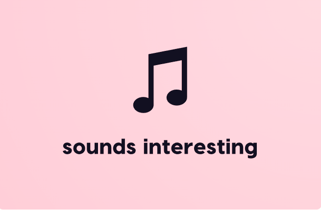

Amacımız
- İnsanlığa Müziği Sevdirmek
- Genel Kültür Kazandırmak
- Sanata ve Sanatçıya Saygı Kazandırmak
- İnsanların Hoşça Vakit Geçirmelerini Sağlamak
- Sanatçıların Vokalsiz Seslerini Dinletmek
|

|
Bu Yola Nasıl Başladım:
Kısaca:
- Müziğe olan derin tutkum, beni her zaman farklı müzik türlerini keşfetmeye ve bu keşiflerimi başkalarıyla paylaşmaya itti.
- Bu tutku, zamanla, kendi müzik sitemi kurma fikrine dönüştü.
- Ardından, site tasarımı, içerik oluşturma ve teknik detaylar üzerinde yoğunlaşarak projeyi hayata geçirdim.
- Bu süreçte, müzik dünyasının derinliklerine inerek sürekli yeni bilgiler edindim.
- Müzik aracılığıyla insanlara ilham vermek ve onların hayatına dokunmak istiyorum.
- Bana müziği bir tutkuya ve bu site için ilham veren kişiye teşekkür ediyorum.
|